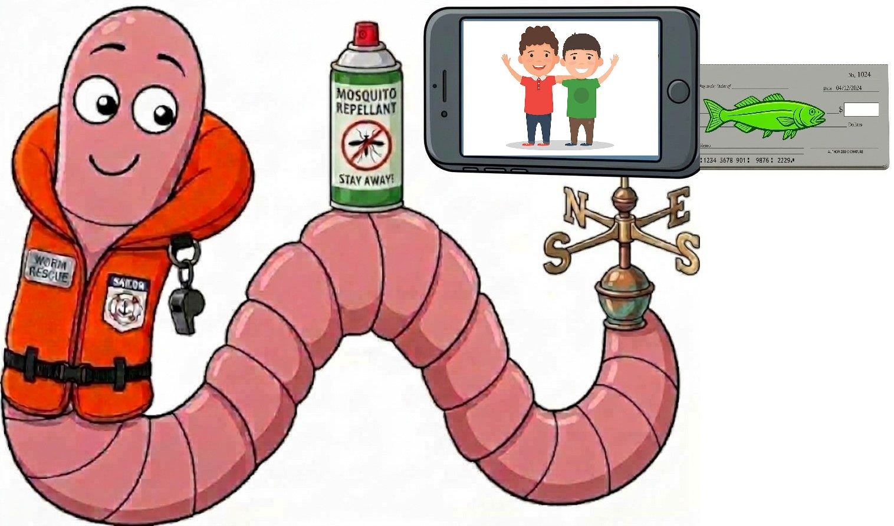
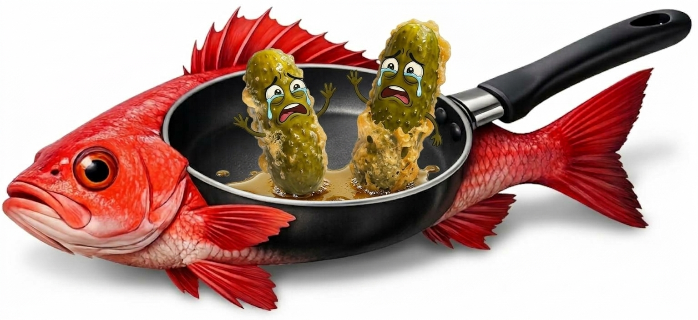
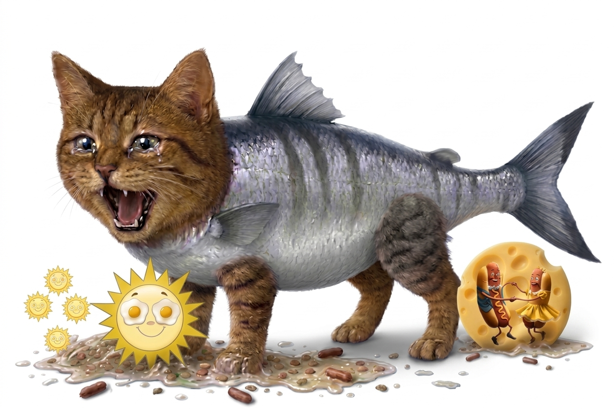
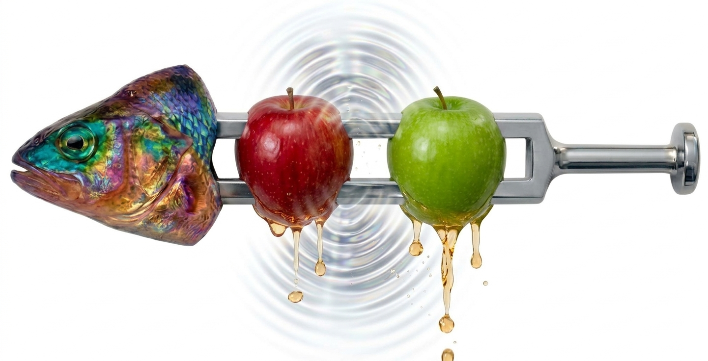

As discussed in Visual Mnemonics there are two important types of associations to meake mental visual images useful, links and the method of loci.
Links are a way of associating mental visual images of information with other mental visual images and are discussed on this page. The method of loci is associating mental visual images of information with mental visual images of spatial locations which is discussed in Associations: Method of Loci.
Links result in associations of mental visual images in an orderly manner. Many things we need to remember are really links in sequence such as speeches, lists and even longer numbers like phone numbers (numbers are discussed in Visual Numbers and Visual Letters). Like the mental visual images themselves the associations are helped if they are ridiculus in some way(Lorayne and Lucas chapters 2 & 3).
AD
AD
Lists are simple examples of using links. An example is a grocery list of 5 items. The items were lettuce, steak, pizza, dog food and chocolate ice cream. The mental visual images of these items can be linked together in a sequence to help recall the list. The first item is associated with the second item, the second item is associated with the third item and so on.
So in the grocery list one could imagine the sliding glass doors (starting mental visual image) at the entrance to the grocery store closed on a head of lettuce (1st link). The lettuce is squeezed very hard and suprisingly a raw steak (2nd link) drops out and lands with a splat on a peporoni pizza (3rd link) lying on the on the concrete floor below it. A mangy dog (4th link) then runs up and eats both the steak and pizza in one bite (this is example of simplifying information to make creating mental visual images easier, there are no dogs at the grocery store so the mental visual image of a dog is adequate to recall dog food). As the dog runs off he falls into a large tub of chocolate ice cream (5th link). Now if one walks through and visualizes the above scenario the grocery list can be recalled easily not just today but probably tomorrow also with very little practice. As one becomes proficient recalling lists 10, 20 oe even 30 items or more in length becomes possible.
AD
AD
Now let's apply the concept of links to indivdual main branches of the the Fish Baits mind map.
Referring back to the Fish Baits mind map we made to simpilfy the algorithm, lets start with the central topic Fish Baits. We need to add the following information in the form of mental visual images, Remember life jackets, Remember bug repellant, Check weather, Call friends to see if wish to go, and Check which fish are biting. The following is one possible way of linking the information together in a sequence.

First start with the image of the happy smiling worm which is the initial image for Fish Baits and then mentally visually work down the length of the worm from head to tail. First there is a red life jacket on the worm for Remember life jackets. Next there is a can of bug repellant on the worms hump for Remember bug repellant. Next on the worms tail is a weather vane for Check weather. On top of the weather vane is a cell phone which a picture of two frineds on it's screen for Call friends to see if wish to go. Finally sticking out of the side of the cell phone is check book with a fish logo for Check which fish are biting.
As a note this images are fairly bland AI generated images. In your minds eye you can spice up the images to make them more vivid. For example I personally would make the above mental visual image associations more ridiculous in some way. I would probably imagine the life jacket so tight the earthworms head was about to pop off, the bottom of the can of bug spary embedded in the earthworm's hump, the weather vane's base screwed on the earthworm's tail and the phone and check rotating around fast. I will not describe adding this extra ridiculousness to the mental visual images below but you can, use your imagination to make it work for you!
Next we need to add information to the main braches of the Fish Baits mind map. The first main branch is Panfish where we just need to add the mental visual image that Pickles are used for bait.

This can be done by simply adding several pickles screaming and crying as they get fried in the frying pan body of the fish.
The Catfish> is the next item in our sequence. It has two secondary branches, Daytime and Nighttime that will be linked as below.

The catfish is retching up suns to represent Daytime and the the suns eyes are replaced by sunny side up fried eggs to represent Eggs. The catfish is pooping out a swiss cheese moon to represent NighttimeNighttime and two hotdogs in love are dancing in the craters of the swiss cheese moon to represent Hotdogs.
The final main branch is Tuna Fish.

There are two apples leaking apple juice are skewered on the tuna fork portion of the fish as it vibrates to represent Apples.
Now mentally visually go over each mental visual image several times and they should stick in your memory. When you recall the mental visual image of each fish type you should be able to remember all the associated information about the bait to use. You may be able to visualize the branching structure of the Fish Baits mind map but if not that is where using the Mehtod of Loci comes in on the next page.
AD
AD